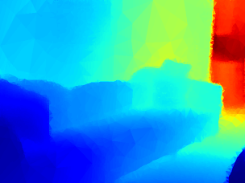

MeshDepth: Disconnected Mesh-based Deep Depth Prediction
The University of Tokyo 1
National Institute of Advanced Industrial Science and Technology (AIST) 2
-
Iunput image

-
Depthmap
 -
3D Mesh

Abstract
We propose a novel method for mesh-based single-view depth estimation using Convolutional Neural Networks (CNNs). Conventional CNN-based methods are only suitable for representing simple 3D objects because they estimate the deformation from a predefined simple mesh such as a cube or sphere. As a 3D scene representation, we introduce a disconnceted mesh made of 2D mesh adaptively determined on the input image. We made a CNN-based framework to compute depths and normals of faces of the mesh. Because of the representation, our method can handle complex indoor scenes. Using common RGBD datasets, we show that our model achieved best or comparable performance comparing to the state-of-the-art pixel-wise dense methods. It should be noted that our method significantly reduce the number of the parameter representing the 3D structure.
[ Paper ]
[ Code ]